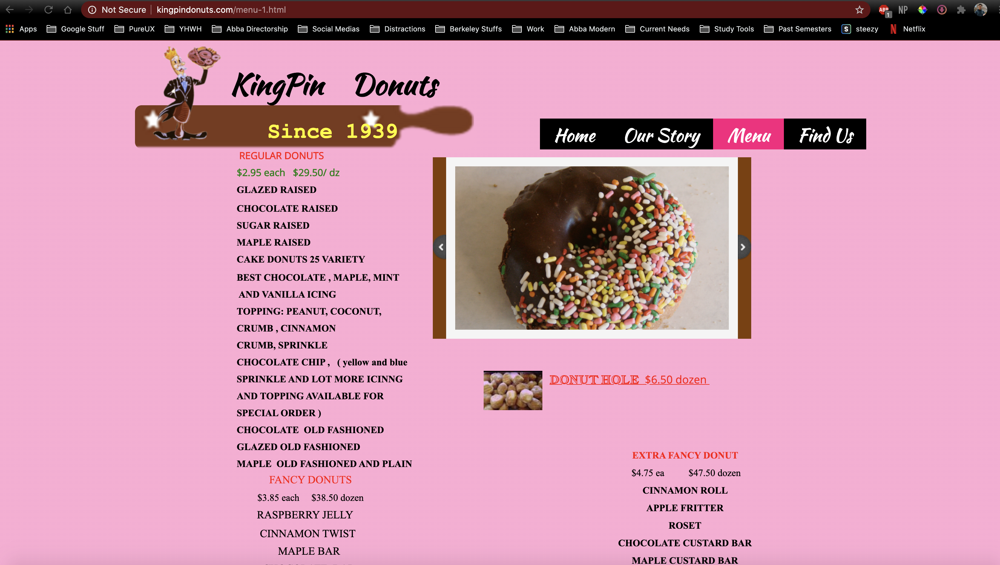
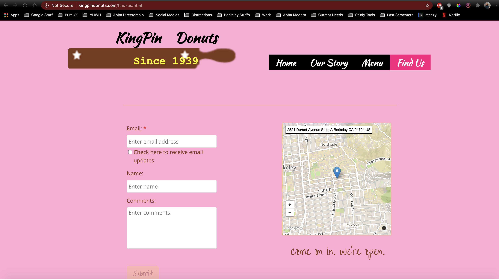
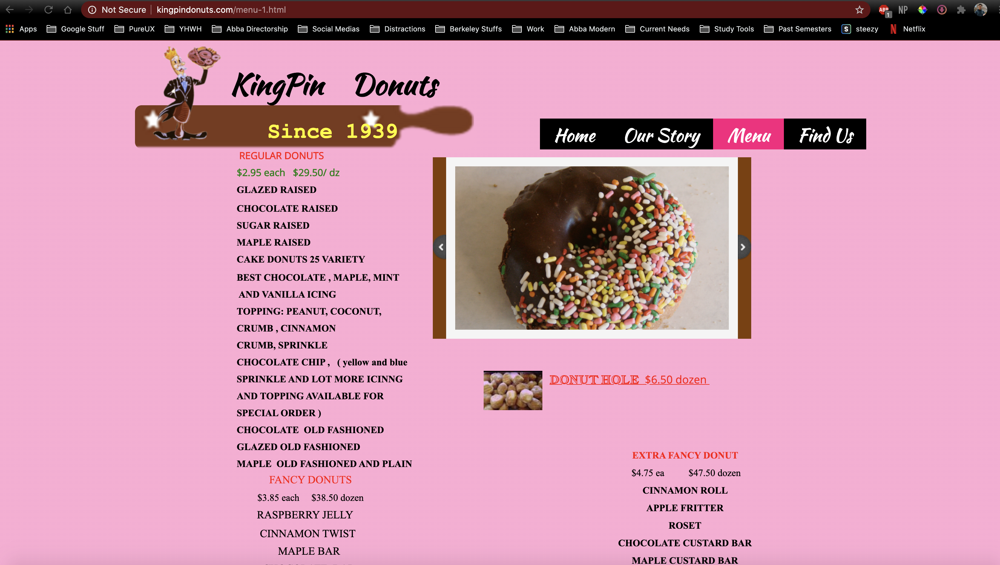
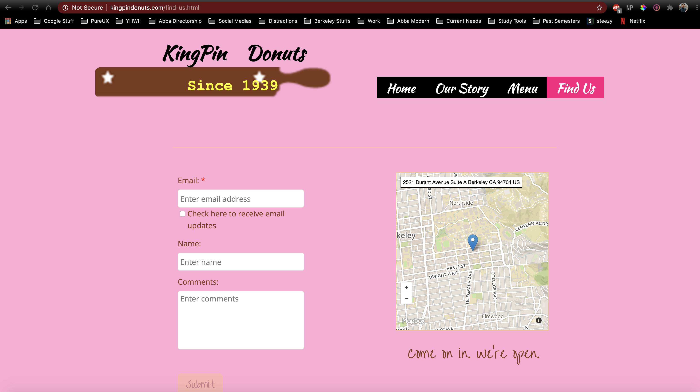

Utilizing Adobe XD, I created a single file that built all the screens, one on top of the other, using the
new
color scheme as a base. I chose to keep the same screen organizations, having home, our story, menu, and
contact
us pages, as well as the navigation bar to keep the UI simple and easy to navigate. I also handpicked 2 of
the
most appetizing images as my focal points.
I made sure that the
2 images I chose displayed many of the products KingPin offered to give a better insight into what products
were
sold.
By picking 2 images, I would be able to refocus the pages on one image instead of sixteen, and it would make
the
page
look cleaner and sleeker. I then went through a reorganized the information on each page, keeping the most
important information at the center and making that larger. I also reogranized the menu into different
compartment boxes to more easily find specific products.
As a whole, I tried to keep a minimalistic feel to the site in order to keep the focus on the content and
the
images. As supposed to making a super busy and complex site that could confuse and overwhelm the user, this
simple design would make the UI intuitive and easy to navigate. Having a mainly white screen would allow for
a more guranteed contrast between text and background, which was an issue in the original site. I then used
the same pink from the site as the main highlight color to add some variety in color and pay homage to the
original site. To further add to the more modern and sleek design I decided to implement, I changed the
text styling from a Serif style to a Sans Serif style in order to lose the dated feel of the original site's
text.

 


